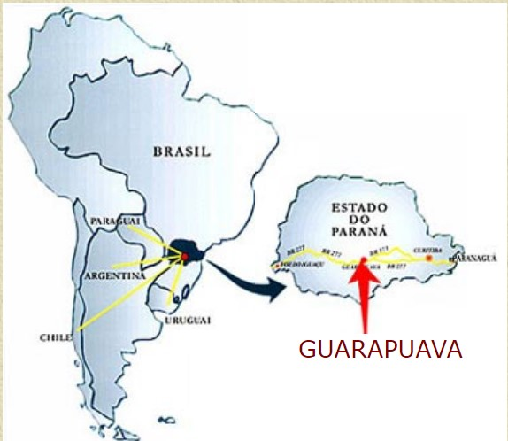

LOCALIZAÇÃO
O Colégio Agrícola Estadual Arlindo Ribeiro está localizado próximo a BR 277, na Rua Mario Virmond S/N, Bairro Xarquinho em Guarapuava - PR.
Seu telefone e wathsapp é (042) 3624-3223 e o seu e-mail é colegioagricola@almix.com.br
O município de Guarapuava fica localizado na região sul do Brasil, Centro-Oeste do Paraná, terceiro planalto, zona fisiográfica dos Campos Gerais. O município faz divisa com os municípios de Campina do Simão, Turvo, Prudentópolis,Inácio Martins, Pinhão, Candói, Goioxim e Canta Galo.

Coordenadas: Longitude Oriental 51°27'15" - Latitude Sul: 25° 23'26".
| Curitiba - PR | 246 km |
| Paranaguá (porto) (PR) | 362 km |
| Foz do Iguaçu (fronteira: Brasil - Argentina - Paraguai) (PR) | 405 km |
| Florianópolis (SC) | 568 km |
| São Paulo (SP) | 700 km |
| Porto Alegre (RS) | 1.065 km |
| Rio de Janeiro (RJ) | 1.151 km |
| Campo Grande (MS) | 1.249 km |
| Belo Horizonte (MG) | 1.262 km |
| Brasilia (DF) | 1.828 km |
| Manaus (AM) | 4.294 km |
MUNICÍPIO DE GUARAPUAVA
(FOTO DO SATÉLITE)
Guarapuava é um município que contava com mais de 155.835 mil habitantes, de acordo com os dados fornecidos pelo IBGE (Censo de 1996). A maior parte dessa população encontrava-se na área urbana, conforme se pode constatar pelo quadro a seguir:
|
Distribuição populacional - 1996 |
||||
| Esfera Administratvia | Urbana | Rural | ||
|
85,3% |
14,7% |
||
|
77,9% | 22,1% | ||
|
78,4% | 21,6% | ||
| Fonte: IBGE - 1996 | ||||
Localizado na região Centro - Sul do Paraná, está a 260 km da capital Curitiba e possui uma área total de 3.006,89 km2, a 1.120 metros acima do nível do mar, temperatura média inferior a 23,6º C e superior a 12,6º C, não apresenta estação seca.
Guarapuava em 11 de novembro de 1.818, tornava-se freguesia de Nossa Senhora de Belém. Inserida dentro do contexto histórico da região onde se encontra, Guarapuava, se desenvolveu nestes tempos em função da pecuária, extração de erva-mate e comércio regional que atendia aos moradores e aos viajantes. Mais tarde, o movimento tropeiro trouxe mais ligações com outras regiões, possibilitando movimentos migratórios. Da agricultura para a agroindústria, o Município foi se desenvolvendo e crescendo regionalmente, e está consolidando esta prática à medida que sua estrutura viária lhe oferece condições para se relacionar com as diferentes regiões paranaenses e brasileiras. Criado através da Lei Estadual nº271, de 12 de abril de 1.871, e instalado na mesma data, foi desmembrado de Castro.
| •População (IBGE-2000) | 155.002 habitantes (9º lugar) | |
| População Urbana | 141.516 hab. (91,3%) | |
| População Rural | 13.486 hab. (8,7%) | |
| •TAC (Taxa Anual de Crescimento) | 0,68% | |
| •PIB (Produto Interno Bruto) | R$ 844.132.555,90 (8º lugar) | |
| •PIB PERCAPITA 1997 | R$ 5.497,73 (141º lugar) | |
| •Região | Centro-Oeste | |
| •Superfície total | 3.006,89 Km2 | |
| •Altitude em relação ao nível do mar | 1.120 m | |
| •Distância da capital do Estado | 268 km | |
| •Temperatura média | 20 o C. | |
| •Número de empresas | 5.520 | |
|
Fonte: Associação Comercial e Industrial de Guarapuava - ACIG |
||